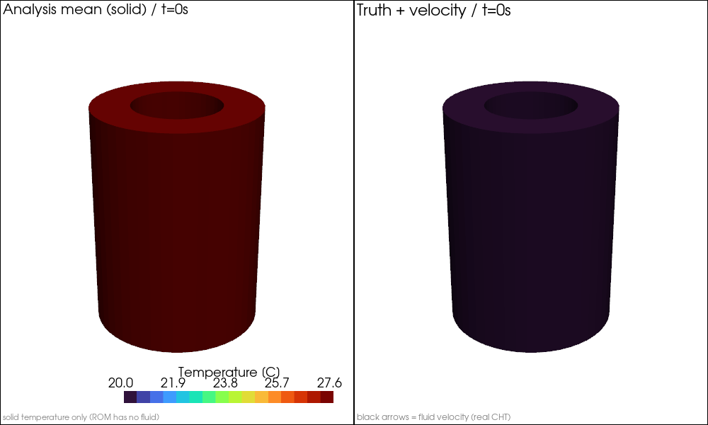
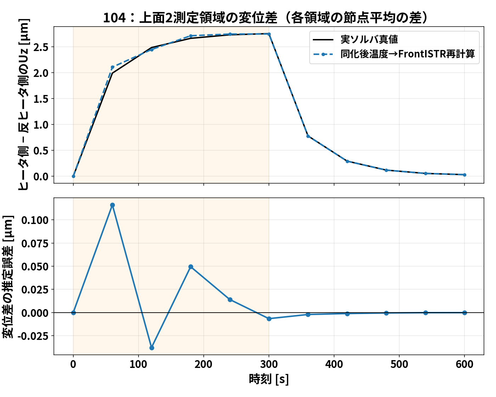
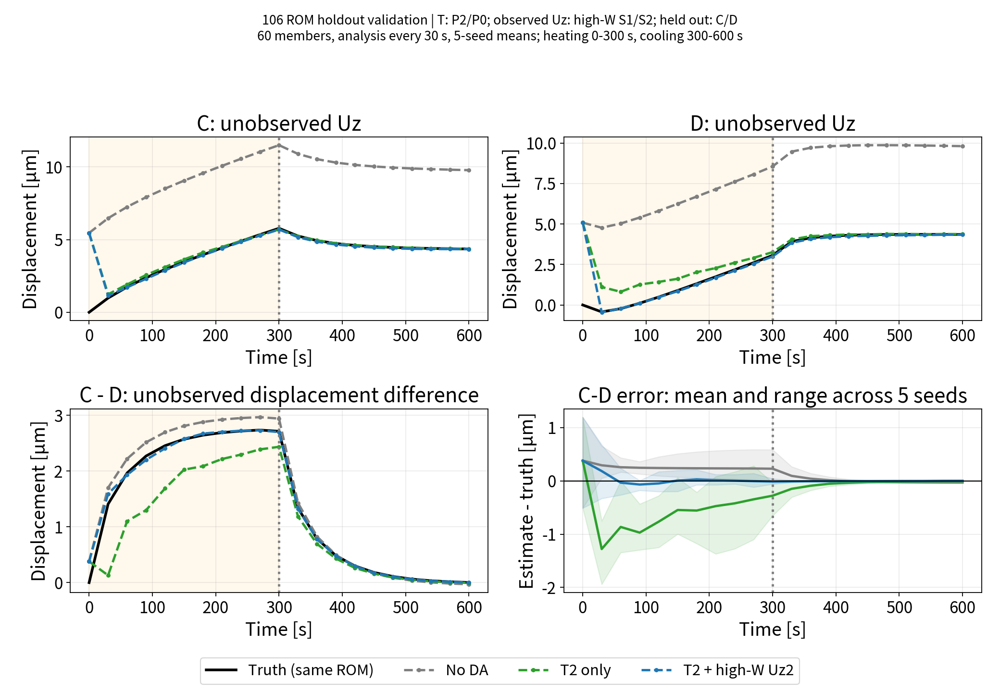
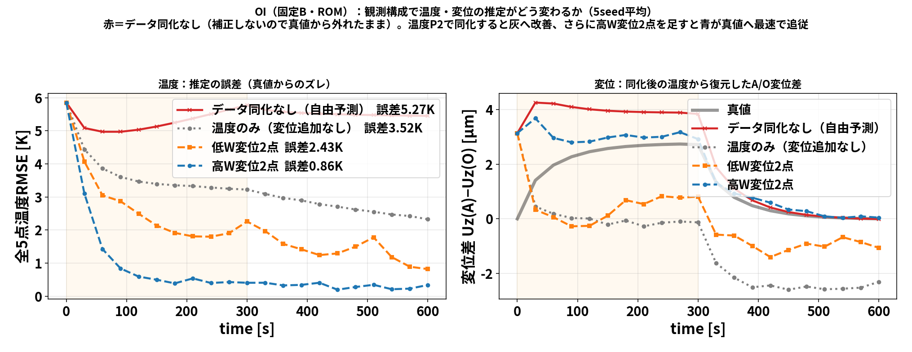
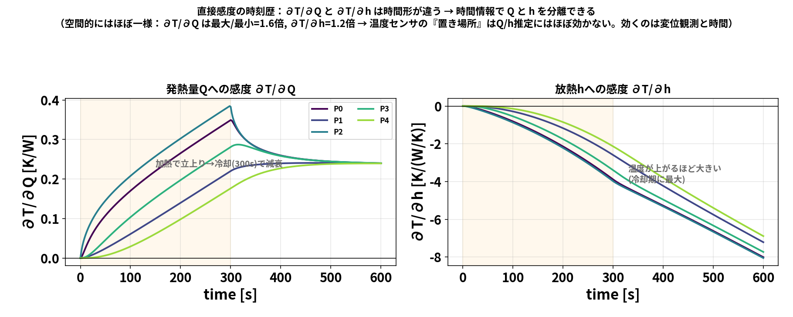
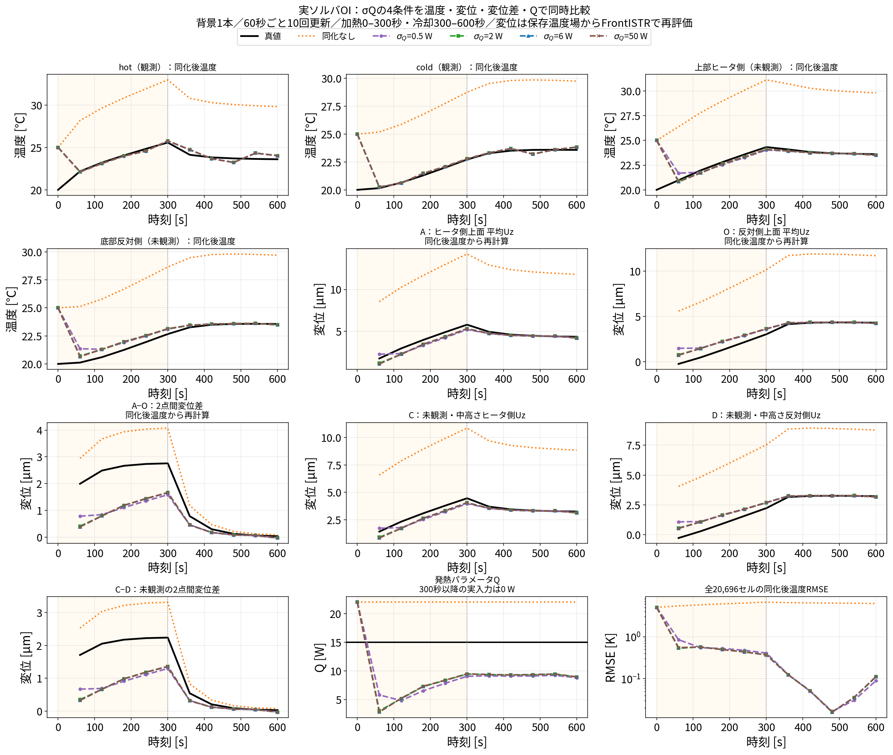
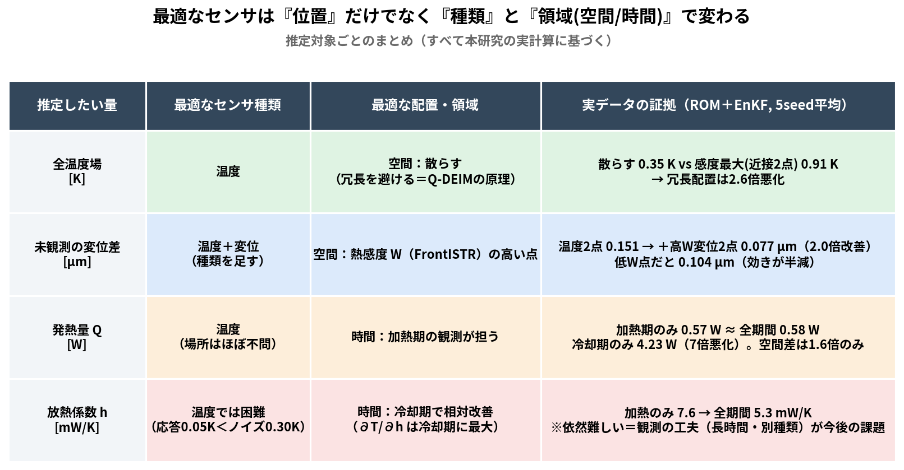
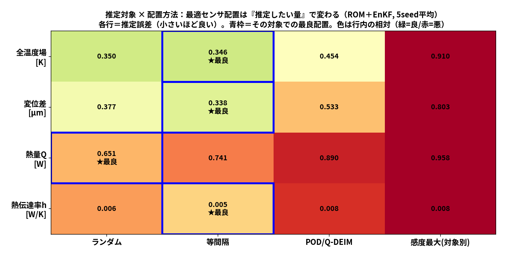
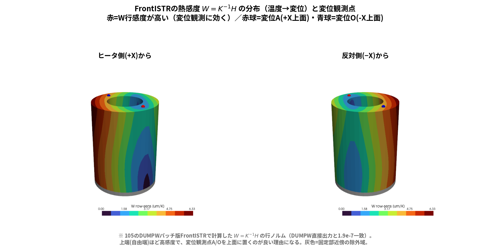
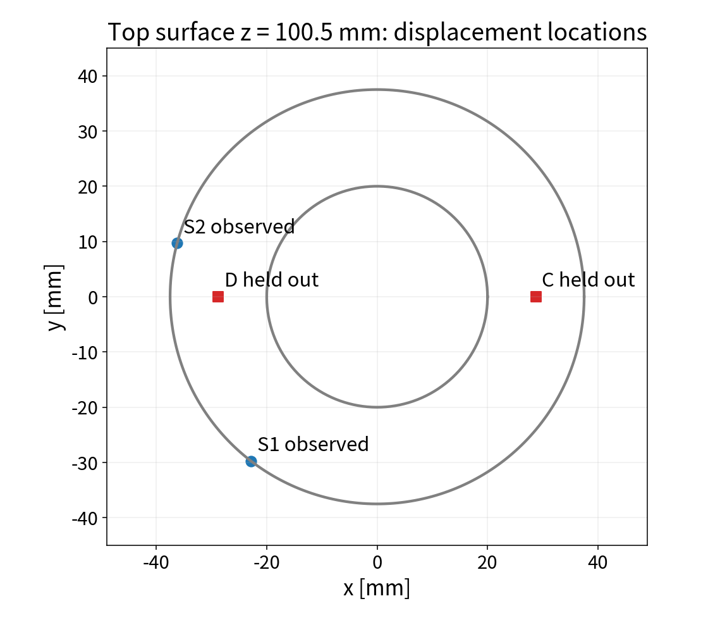

01 なぜ必要か
熱源が片側にあると温度に偏りが生じ、構造が伸びるだけでなく反る。温度計だけでは、その結果としての2点間変位差を十分に捉えられない場合がある。
少数の温度・変位観測を解析に取り込み、全温度場・発熱量・未観測変位を推定する。
熱源が片側にあると温度に偏りが生じ、構造が伸びるだけでなく反る。温度計だけでは、その結果としての2点間変位差を十分に捉えられない場合がある。
少数の温度・変位観測を解析に取り込み、全温度場・発熱量・未観測変位を推定する。

中空円柱・片側15 W加熱。OpenFOAMで共役熱伝達、FrontISTRで底面固定の熱弾性解析。人工観測を用いる双子実験。

Q-DEIMで代表5点を選び、5点の集中定数ROMを校正＝残差0.014 KでOpenFOAM再現。0→600秒の前進が約31 ms（実ソルバの数時間→桁違いに高速）。これが106の核。


| 観測構成 | 温度RMSE | 変位差誤差 |
|---|---|---|
| 温度1点 | 0.617 K | 0.869 µm |
| 温度2点 | 0.197 K | 0.151 µm |
| ＋変位2点(低W) | 0.188 K | 0.104 µm |
| ＋変位2点(高W) | 0.159 K | 0.077 µm |
104：実ソルバを5メンバーで繰り返す。10分間の現象に約13時間（全体実行時間の例）。
106：高価な解析結果から軽量モデルを作り、配置や乱数を変えた反復検証を可能にする。

104：5メンバー／60秒ごと10回更新／温度hot・cold＋上面2領域Uzを同化。実測ではない。

106 ROM双子実験／60メンバー／30秒ごと20回更新／5seed。真値も同じROMと変位写像。温度ノイズ0.30 K、変位0.30 µm。C/Dは観測に使わない。
未観測C−D変位差の加熱期RMSE。温度2点のみと比較して約80%低減。各seedで30〜300秒のRMSEを計算して5seed平均。
今回の主眼：ソルバ連携、観測による補正、ROM化、結果の再現性。独立した実測への一般化は今後の課題。
同じ初期温度・Qのまま、ROMのhを40%増加させた既存の確認計算では、600秒までの応答差は次の値だった。
観測ノイズの標準偏差はそれぞれ0.30 K／0.30 µm。応答が小さく、hを区別しにくい可能性がある。
有限摂動による既存確認。これだけでh同定不良の全原因を確定したわけではない。

壁面熱伝達率：W/(m²K)
今回のROMのh：放熱コンダクタンス W/K。資料ではG_lossとも表記する。

| 配置（変位2点） | 温度RMSE（加熱期） |
|---|---|
| データ同化なし（基準） | 5.27 K |
| 低感度（低W）に置く | 2.43 K |
| 高感度（高W）に置く | 0.86 K（約3倍改善） |
既存の106 ROM双子実験（温度/変位の感度W）。Q・hの低感度vs高感度は、直接感度 \(\partial T/\partial Q,\ \partial T/\partial h\) を用いて今後同様に示す。
熱方程式をQ₀・hで微分し、温度5変数と感度各5変数を同じRK4ステージで積分する。
Q感度はヒータ入力で駆動。h感度は温度上昇後に強くなる。加熱と冷却の時刻歴が識別の手掛かりになる。
\(\chi(t)=1\)：\(t<300\,\mathrm{s}\)、\(\chi(t)=0\)：\(t\ge300\,\mathrm{s}\)。冷却でQ感度そのものをゼロにはしない。\(Q_0=15\,q_{\mathrm{scale}}\;\mathrm{W}\)。

知見：Q/hの温度感度は空間的にほぼ一様（最大/最小 = 1.6倍/1.2倍）。→ 温度センサの「置き場所」はQ/h推定にほぼ効かず、「いつ観測するか（時間）」が識別の鍵。実際、同じ2点でも加熱期のみでQ誤差0.57 W、冷却期のみだと4.23 W（7倍悪化）。
p＝Q₀またはh。固定したPOD基底とFrontISTRモード応答を使用。

①数値検証：直接感度を中心差分と比較。加熱終了の入力切替も確認。
②配置設計：Q-DEIM・単純感度・Q/h識別性の3方式を比較。
③性能評価：同じEnKF、ノイズ、seed群でQ/h誤差・温度RMSE・未観測変位RMSEを比較。
直接感度と識別性配置の比較は追加研究。既存図を、その実証結果として扱わない。
Q-DEIMは温度場の低次元再構成を目的に代表点を選ぶ。しかし、発熱量の識別や特定の2点間変位差を良くすることまで保証しない。
センサ数が限られるとき、推定目的に合わない配置では、温度が合っても重要な変位が外れる可能性がある。


比較方針：ROM代表点とモデルは固定し、観測点だけを変える。温度候補は復元した全20,696セルから選べる。

| 推定したい物理量 | 有効な観測点の考え方 | 配置の評価指標 |
|---|---|---|
| 全温度場 \(\mathbf T\) | 温度モードを重複なく捉える点 | POD / Q-DEIM、全場RMSE |
| 発熱量 \(Q_0\) | 発熱変化が観測に現れやすい点 | \(\partial T/\partial Q_0\)、\(\partial u/\partial Q_0\) |
| 放熱係数 \(h\) | 放熱変化が温度・変位の時刻歴に現れる点 | \(\partial T/\partial h\)、\(\partial u/\partial h\) |
| \(Q_0,h\) 同時 | 両者の影響を区別できる点の組合せ | \(\lambda_{\min}(F)\)、\(\sigma_{\min}(\widetilde G)\) |
| 未観測変位差 \(d=u_A-u_O\) | 対象の変位差に効く温度分布を捉える点 | \(W_{A,:}-W_{O,:}\)、変位差RMSE |
| TCP相対熱変位 | 工具と工作物の相対変位に効く点 | TCP感度、最大誤差・RMSE |
研究仮説：推定したい物理量に応じた最適な観測点配置がある。位置はモデル・時刻・ノイズ・センサ数で変わる。上記は設計方針であり、最適性は配置比較で検証する。Q-DEIMや感度最大だけで大域的最適性は保証しない。
G̃は観測ノイズとパラメータ尺度で規格化した感度。Q感度とh感度が似すぎる位置は、感度が大きくても識別しにくい。

狙う2点間変位差の感度は、対応するWの2行の差で評価する。

| 観測 | 未観測C−D RMSE |
|---|---|
| なし | 0.276 µm |
| 温度2点 | 0.792 µm |
| 温度2＋変位2 | 0.158 µm |
106 ROM双子実験／60メンバー／30秒ごと20回更新／5seed。真値も同じROMと変位写像。温度ノイズ0.30 K、変位0.30 µm。C/Dは観測に使わない。 加熱30〜300秒。

温度だけの同化で個別変位が改善しても、差は悪化した例がある。何を評価するかが重要。
「目的別に最良配置が違う」は未検証の仮説。公平な3方式比較と複数seed評価で、成立条件と成立しない条件を示す。
指標：全温度RMSE、Q/h誤差、未観測変位RMSE、必要センサ数。
主軸・軸受・モータが発熱すると、主軸台・コラム・ベッドの温度分布が変化し、工具先端位置がずれる。
限られたセンサで、工具先端と工作物基準の相対熱変位（TCP）を把握し、将来の補正につなげたい。
片側加熱と熱変形を単純形状で検証してから、複数熱源と複雑な拘束を持つモデルへ進む。
追加する物理：回転・負荷依存の熱源、冷却、周囲対流、支持・接触条件。
追加する観測：温度履歴と変位計。配置はTCPへの感度とパラメータ識別性で設計。
温度RMSEだけでなく、TCP誤差の最大値・過渡期RMSE・センサ数を評価する。
実機・TCP推定の性能値はまだない。このポスターは応用計画であり、実証済み成果として発表しない。
温度＋変位観測が、別の場所の変位差推定に効く例を確認した。次は実機の相対変位を評価対象にする。
発表の順番：OpenCAEの実装成果 → 直接感度 → 目的別配置 → 工作機械応用。
判断いただきたいこと：発表先、追加検証の工数、公開範囲、実機モデル・計測データへのアクセス。
15分発表：各学会の主題を一つに絞り、背景・手法・主結果5〜7図・限界を説明する。
104/106全体像 ／ 未観測変位の条件・結果 ／ RMSE原表 ／ hの40%摂動確認。Q/h直接感度法・目的別配置は今後の検証計画。TeX数式はMathJaxで描画するため、初回表示はインターネット接続が必要です。印刷ではアニメーションは静止画になります。